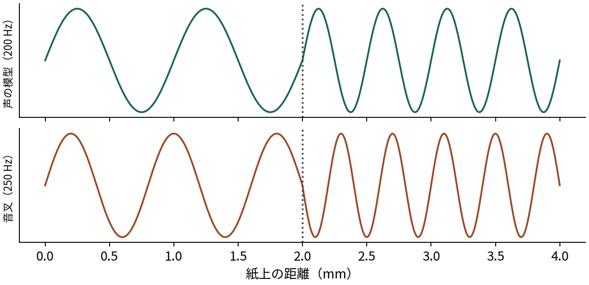

第55章 紙に残った声に時計を返す
1860年に紙に描かれた声を、音叉の波を時計にして再生する。
この章で学ぶこと
- 紙の上の波長から周波数を求める式を使う
- 基準振動で、紙送りの揺れを補正する
- 復元の不確かさがどこから来るかを考える
1860年4月、フランスの民謡《月の光に》を歌う声が、振動する針の軌跡として残った。エドゥアール＝レオン・スコット・ド・マルタンヴィル（Édouard-Léon Scott de Martinville）のフォノトグラフが描いた線である。一世紀以上後にその線から声を再生した研究者は、初期の復元で歌い手を女性あるいは若者に聞こえる速さに設定した。その後の別資料と音叉の表記の再検討を経て、再生速度を半分に修正した。たった一枚の記録を前に、二人の歌い手を想像してしまえる。紙には何が書いてあり、何を後から決めたのだろう。
ミリメートルに秒の値札を付ける
ある短い区間で記録紙が速度 （mm/s）で流れ、紙に描かれた振動一周の長さが （mm）だったとする。一秒で通る波の数を数えれば周波数は 。たとえば紙に0.50 mmおきの波が見えれば、 mm/s なら200 Hz、 mm/s なら400 Hzで同じ形になる。どれだけ画像を高解像度にしても、距離を時間へ換算する根拠はこの式だけでは得られない。同じことがテープの速度操作では作曲の道具になる。
原資料に一定周波数 の参照振動が一緒に記録されているとしよう。幅 の同一区間で、声が 周、基準が 周進んでいれば、その区間の経過時間と声の平均周波数は次式で求まる。
導出を読む（読まなくても先へ進めます）
周波数は一秒あたりの周期数。一定な基準の 周に費やした時間を求め、声の総周期数をその時間で割る。幅 と紙の平均速度は消去される。一定速は要らないが、二本の記録が同じ区間の時間を共有し、数え落としがないことを仮定した。端点が振動の途中なら位相の端数も含める。一周期に山と谷が一つずつあるので、往路・復路をそれぞれ一回と数える古い単位を、今日の Hz に読み替えるには注意が要る。

消えた時間は補間で取り戻せるか
基準音の読み取れた累積位相を ラジアンとする。軌跡上の位置 に対し とすれば、紙送りが揺れても等時間隔のデータへ戻せる。手順は、基準の各山の位置を書き出し、隣り合う山の間で時刻を補間し、等間隔の時刻に声の線の高さを読み直すこと。線が欠けた区間で何周が失われたか決められなければ、後半全体の時刻に整数周期ぶんの不確かさが残る。紙送りそのものが停止して同じ場所に軌跡が重なったなら、位置から時刻への一対一対応が破れる。解像度を上げたり、線の見栄えを滑らかにしたりする操作は失われた対応を保証しない。
聴いてみよう
史料に耳を近づける。 First Sounds に並ぶ4月9日版と4月20日版を順に開く。まず旋律を知っていることを利用して、声が始まる位置と、歌の途中で持続・ノイズ・時間の詰まりを感じる位置を記録する。次に解説を読み、4月9日版の「Pierrot」の後で円筒の回転が極端に遅くなった可能性という解釈と突き合わせる。異なる日の演唱のため、差のすべてを補正技術の差と見なすことはできない。同じ転写の復元手法の変化を聞くには、同サイトの earlier playbacks で同じ4月9日の版を比較する。
やってみよう
手元での実験。 紙に「基準が5周する間に声が4周する」図を描き、基準を250 Hzと仮定する。紙の後半だけ横幅を半分に縮めてもう一枚描く。定規で1 cm区間だけ測れば二枚の声が違う周波数に見える箇所ができる。それでも基準を一緒に数えると声は200 Hzである。今度は同じ二本の図の基準ラベルを500 Hzに貼り替える。両者とも400 Hzになる。波形・物差し・単位の記録の三者がそろって初めて、一つの歴史的な音高が定まる。
問い
20 msの区間で基準が5周、声が4周に見える。声側の欠損に隠れた山がもう一つあるかもしれない。速度だけで二仮説を区別できるか。
解答を見る（先に自分で考えてから）
その時間は共通なので候補は200 Hzと250 Hz。速度だけでは選べない。前後の位相の連続性、別転写、傷の形態など、候補に異なる予測を与える観測が要る。歴史史料で問う「誰がいつ何を書き残したか」は、ここでは波形の復元アルゴリズムそのものへの入力である。
ここだけ押さえる
- 周波数＝紙送り速度÷紙上の波長。速度が分からなければ音高も決まらない。
- 同じ区間での基準と声の周期数の比から、声の周波数が分かる。
- 線が欠けた区間では、整数周期ぶんの不確かさが残る。
この章の資料
- First Sounds の一覧から日付の異なる二つの《Au Clair de la Lune》のMP3と、同じ記録の過去の復元をたどれる。復元音源と記録
- 復元に携わった Patrick Feaster は、紙上の音声からの再生法、速度の読み違い、補正の難点を実例で説明している。Playback Methods for Phonogram Images on Paper